ПЛОСКОСТЬ – является простейшей поверхностью, которую можно представить, например, как веер линий, полученных при движении прямой, закрепленный в некоторой (.), по другой прямой
В отличие от линии, плоскость не может быть задана на чертеже своими проекциями. Плоскость в пространстве безгранична, бесконечна, а потому проекции её (.) займут всё поле чертежа. Положение плоскости в пространстве определяется положением задающихся ее элементов, входящих в определитель плоскости, т.е. плоскость задается проекциями геометрических объектов, располагающихся на ее поверхности. Графически плоскость может быть задана одним из шести способов:
- тремя (.), не лежащими на одной прямой;
- пл и (.), не лежащей на этой прямой;
- двумя ∥ пл;
- двумя пересекающимися пл;
- плоской фигурой;
- следами этой плоскости.
От любого из этих способов можно легко перейти к любому другому.
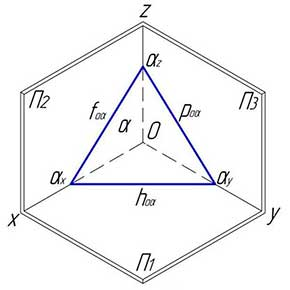
СЛЕДЫ ПЛОСКОСТИ (сп) – пл, по которой данная плоскость пересекается с горизонтальной, фронтальной или профильной пп. В зависимости от того, какую пп данная плоскость пересекает, различают: фронтальный, горизонтальный и профильный следы плоскости. Каждый из следов плоскости совпадает со своей одноименной проекцией, а две другие – разноименные проекции – оказываются лежащими на осях координат. Проекции следов, совпадающие с осями координат, обозначать не принято. Любые два следа плоскости, как две пересекающиеся прямые, вполне определяют положение плоскости в пространстве. Третий след плоскости всегда можно построить по двум данным. След плоскости как линия в системе пп является линией нулевого уровня, т.к. принадлежит поверхности какой-либо плоскости проекций.
ГОРИЗОНТАЛЬНЫЙ СЛЕД ПЛОСКОСТИ (гсп) – пл, по которой данная плоскость пересекает горизонтальную плоскость проекций П1. На чертеже изображается горизонтальной проекцией и обозначается как горизонталь нулевого уровня со значком принадлежности плоскости. Например, для плоскости α - hоα.
ФРОНТАЛЬНЫЙ СЛЕД ПЛОСКОСТИ (фсп) – пл, по которой данная плоскость пересекает фронтальную плоскость проекций П2. На чертеже изображается фронтальной проекцией и обозначается как фронталь нулевого уровня со значком принадлежности плоскости. Например, для плоскости α - foα.
ПРОФИЛЬНЫЙ СЛЕД ПЛОСКОСТИ (псп) – пл, по которой данная плоскость пересекает профильную плоскость проекций П3. На чертеже изображается профильной проекцией и обозначается как профильная пл нулевого уровня со значком принадлежности плоскости. Например, для плоскости α - pоα.
ТОЧКИ СХОДА СЛЕДОВ (тсс) – точки пересечения следов заданной плоскости с координатными осями X, Y и Z. Обозначаются, например, для плоскости α соответственно αx, αy, αz.
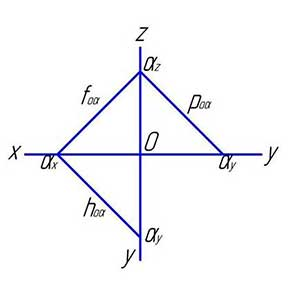
ПЛОСКОСТЬ ОБЩЕГО ПОЛОЖЕНИЯ (поп) – это плоскость, занимающая произвольное положение относительно плоскостей проекций, т.е. она не ⟂ и не ∥ ни одной основной плоскости проекций. Ни одна из ортогональных проекций геометрических объектов, задающих плоскость общего положения, не сливается в пл. Метрические характеристики такой плоскости на чертеже искажаются и не могут быть определены непосредственно с чертежа плоскости. Различают: восходящие и нисходящие плоскости общего положения.
ВОСХОДЯЩАЯ ПЛОСКОСТЬ ОБЩЕГО ПОЛОЖЕНИЯ (впоп) – плоскость произвольного положения, которая, удаляясь от наблюдателя, идет вверх (на подъем). Метрические характеристики данной плоскости на чертеже напрямую не определяются. Угол наклона такой плоскости можно получить с использованием линии ската.

НИСХОДЯЩАЯ ПЛОСКОСТЬ ОБЩЕГО ПОЛОЖЕНИЯ (нпоп) – плоскость произвольного положения, которая, удаляясь от наблюдателя, идет вниз (на спуск). Метрические характеристики данной плоскости на чертеже напрямую не определяются. Угол наклона такой плоскости можно получить с использованием линии ската.
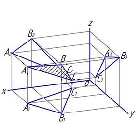
ПЛОСКОСТИ ЧАСТНОГО ПОЛОЖЕНИЯ (пчп) – это плоскости, ⟂ либо ∥ пп. Различают: проецирующие плоскости и плоскости уровня. На ортогональном чертеже любой плоскости частного положения хотя бы одна проекция всегда вырождается в пл.
ПРОЕЦИРУЮЩАЯ ПЛОСКОСТЬ (пп) – это плоскость, ⟂ к одной из пп и при этом не ⟂ и не ∥ двум другим. В зависимости от того к какой плоскости проекций ⟂ проецирующая плоскость, различают: горизонтально проецирующую, фронтально проецирующую и профильно проецирующую плоскости.
ГОРИЗОНТАЛЬНО ПРОЕЦИРУЮЩАЯ ПЛОСКОСТЬ (гпп) – плоскость, ⟂ горизонтальной плоскости проекций П1 и при этом не ⟂ и не ∥ фронтальной П2 и профильной П3 плоскостям проекций. Гпп представляет собой прямую линию, которая одновременно является гcп. Любой геометрический объект, расположенный в этой плоскости, проецируется на горизонтальной плоскости проекций П1 в эту прямую. Угол, который составляет гсп с координатной осью Х, равен углу наклона этой плоскости к фронтальной плоскости проекций П2, а с координатной осью Y– к профильной плоскости проекций П3. Фронтальный след гпп ⟂ оси координат X.
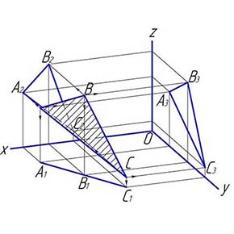
ФРОНТАЛЬНО ПРОЕЦИРУЮЩАЯ ПЛОСКОСТЬ (фпп) – плоскость, ⟂ фронтальной плоскости проекций П2 и при этом не ⟂ и не ∥ горизонтальной П1 и профильной П3 плоскостям проекций. Фпп представляет собой прямую линию, которая одновременно является фсп. Любой геометрической объект, лежащий в этой плоскости, на чертеже совмещен с ее фронтальным следом. Угол, который составляет фсп с координатной осью Х, равен наклону данной плоскости к горизонтальной плоскости проекций П1, а с координатной осью Z – к профильной плоскости проекций П3. Горизонтальный след фронтально проецирующей плоскости перпендикулярен оси координат Х.

ПРОФИЛЬНО ПРОЕЦИРУЮЩАЯ ПЛОСКОСТЬ (ппп) – плоскость, ⟂ профильной плоскости проекций П3 и при этом не ⟂ и не ∥ горизонтальной П1 и фронтальной П2 плоскостям проекций. Ппп представляет собой прямую линию, которая одновременно является профильным следом плоскости. Любой геометрический объект, лежащий в этой плоскости, на чертеже совмещен с ее профильным следом. Угол, который составляет псп с координатной осью Y, равен наклону данной плоскости к горизонтальной плоскости проекций П1, а с координатной осью Z – к фронтальной плоскости проекций П2. Горизонтальный след такой плоскости перпендикулярен оси Y. В зависимости от удаления от наблюдателя различают: восходящую профильно проецирующую и нисходящую ппп.
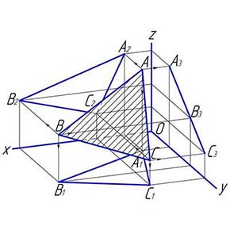
ПЛОСКОСТЬ УРОВНЯ (пу) – это плоскость ∥ одной из плоскостей проекций, а значит ⟂ одновременно к двум другим плоскостям проекций. В зависимости от того какой плоскости проекций параллельна данная плоскость, различают: горизонтальную, фронтальную и профильную плоскости уровня. Любой геометрический объект, расположенный в плоскости уровня, в зависимости от параллельности проецирует на одну из плоскостей проекций в натуральную величину.
ГОРИЗОНТАЛЬНАЯ ПЛОСКОСТЬ УРОВНЯ (гпу) – плоскость, ∥ гпп П1 и при этом ⟂ фронтальной П2 и профильной П3 плоскостям проекций. Фронтальная и профильная проекции такой плоскости – прямые линии, совпадающие с одноименными следами этой плоскости, и ∥ осям координат X и Y соответственно. Любой геометрический объект, расположенный в гпу, проецируется без искажения на гпп П1.
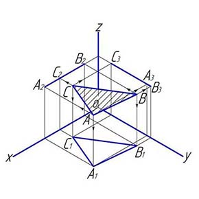
ФРОНТАЛЬНАЯ ПЛОСКОСТЬ УРОВНЯ (фпу) – плоскость, ∥ фронтальной плоскости проекций П2 и при этом ⟂ горизонтальной П1 и профильной П3 плоскостям проекций. Горизонтальная и профильная проекции такой плоскости – прямые линии, совпадающие с одноименными следами этой плоскости и ∥ осям координат Х и Z соответственно. Любой геометрический объект, расположенный во фпу, проецируется без искажения на фронтальную плоскость проекций П2.
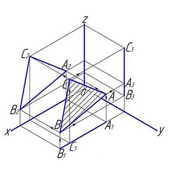
ПРОФИЛЬНАЯ ПЛОСКОСТЬ УРОВНЯ (ппу) – плоскость, ∥ профильной плоскости проекций П3 и при этом ⟂ горизонтальной П1 и фронтальной П2 плоскостям проекций. Горизонтальная и фронтальная проекции такой плоскости – прямые линии, совпадающие с одноименными следами этой плоскости и ∥ осям координат Y и Z соответственно. Любой геометрический объект, расположенный в ппу, проецируется без искажения на ппп П3.
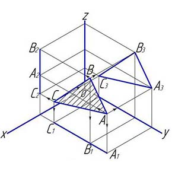
ГЛАВНЫЕ ЛИНИИ ПЛОСКОСТИ (глп) – это пл, расположенные в данной плоскости, выделяемые среди множества других линий, как занимающие особое положение. Это линии уровня плоскости: горизонталь h, фронталь f и ппп p, а также линии наибольшего наклона плоскости к плоскостям проекций П1, П2 и П3.
ГОРИЗОНТАЛЬ ПЛОСКОСТИ (гп) – пл, принадлежащая этой плоскости и ∥ гпп П1, т.е. это горизонтальная прямая линия уровня, лежащая на поверхности какой-либо плоскости. Фронтальная и профильная проекции горизонтали плоскости ∥ осям координат X и Y соответственно Все горизонтали плоскости ∥ друг другу и горизонтальному следу своей плоскости. Обозначается на чертеже буквой – h.
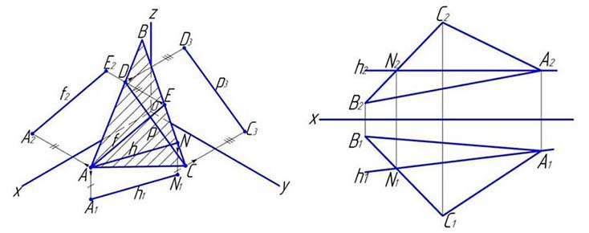
ФРОНТАЛЬ ПЛОСКОСТИ (фп) – пл, принадлежащая этой плоскости и ∥ фпп П2, т.е. это фронтальная прямая линия уровня, лежащая на поверхности какой-либо плоскости. Горизонтальная и профильная проекции фронтали плоскости ∥ осям координат X и Z соответственно. Все фронтали плоскости параллельны друг другу и фронтальному следу своей плоскости. Обозначается на чертеже буквой – f.
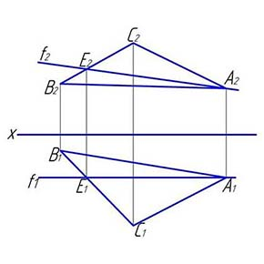
ПРОФИЛЬНАЯ ПРЯМАЯ ЛИНИЯ ПЛОСКОСТИ (пплп) – пл, принадлежащая этой плоскости и параллельная профильной плоскости проекций П3, т.е. это профильная прямая линия уровня, лежащая на поверхности какой-либо плоскости. Фронтальная и горизонтальная проекции профильной прямой плоскости параллельны осям координат Z и Y соответственно. Все профильные прямые линии плоскости параллельны друг другу и профильному следу своей плоскости. Обозначается на чертеже буквой – p.
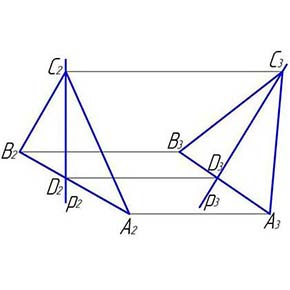
ЛИНИИ НУЛЕВОГО УРОВНЯ ПЛОСКОСТИ (лнуп) – это пл, принадлежащие одновременно данной плоскости и какой-либо плоскости проекций, т.е. являются одновременно и главными линиями плоскости, и следами этой плоскости. Горизонтальный след плоскости – это горизонталь плоскости нулевого уровня, фронтальный след плоскости – фронталь плоскости нулевого уровня и профильный след плоскости – профильная прямая плоскости нулевого уровня. Обозначаются на чертеже – hоά, fоά, ρоά соответственно.
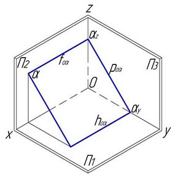
ЛИНИИ НАИБОЛЬШЕГО НАКЛОНА ПЛОСКОСТИ (лннп) к плоскостям проекций П1, П2 и П3 – пл, лежащие в ней и ⟂ или к горизонталям плоскости, или к ее фронталям, или к ее профильным прямым.
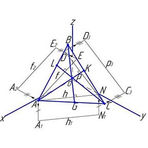
ЛИНИЯ СКАТА ПЛОСКОСТИ (лсп) – линия наибольшего наклона плоскости к гпп П1, т.е. пл, проведенная по поверхности плоскости ⟂ любой горизонтали этой плоскости. Согласно теореме о проекции прямого угла, прямой угол между горизонталью плоскости и линией ската плоскости проецируется на гпп П1 без искажения. Лсп и ее горизонтальная проекция образуют линейный угол, которым измеряется двугранный, составленный данной плоскостью и пп П1.
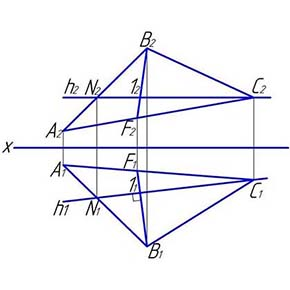
ЛИНИЯ НАИБОЛЬШЕГО НАКЛОНА ПЛОСКОСТИ К ФРОНТАЛЬНОЙ ПЛОСКОСТИ ПРОЕКЦИЙ П2 (лннпкфпп) – пл, проведенная по поверхности какой-либо плоскости ⟂ любой фронтали этой плоскости. Согласно теореме о проекции прямого угла, прямой угол между лннпкфпп П2 и фронталью этой плоскости проецируется на фронтальную плоскость проекций П2 без искажения.
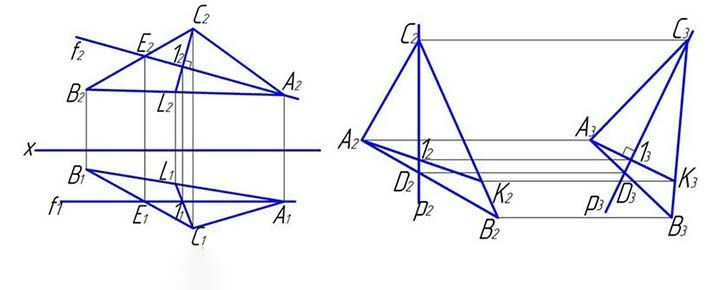
ЛИНИЯ НАИБОЛЬШЕГО НАКЛОНА ПЛОСКОСТИ К ПРОФИЛЬНОЙ ПЛОСКОСТИ ПРОЕКЦИЙ П3 (лннпкппп) – пл, проведенная по поверхности плоскости перпендикулярно профильной прямой линии уровня этой плоскости. Согласно теореме о проекции прямого угла, прямой угол между лннпкппп П3 и профильной прямой линией этой плоскости проецируется на профильную плоскость проекций П3 без искажения.
Если у вас остались вопросы или предложения по данной статье, направляйте ваш материал к нам на контакты.